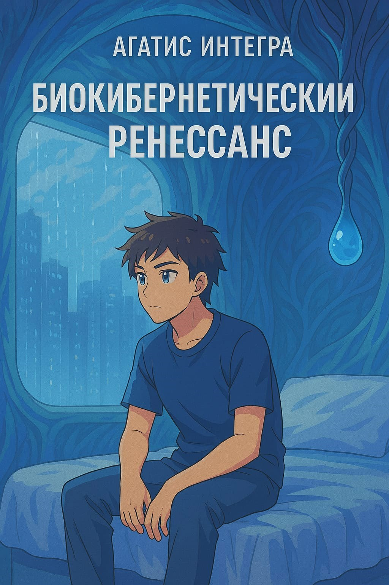

Двадцать семь лет назад мир пережил катастрофическое событие — Резонанс. Слияние глобальной цифровой сети с биосферой. Технологии не исчезли, а трансформировались, став неотъемлемой частью самой природы.
Между старым и новым миром. Между био и кибер. Между потерянным и тем, что осталось.
Александр Кович живёт на границе старого и нового миров, обладая уникальной способностью взаимодействия с биокибернетической экосистемой благодаря медицинскому импланту, установленному непосредственно перед Резонансом.
Однажды он получает таинственное сообщение, намекающее на существование «второго узла» — своей давно потерянной сестры-близнеца Сары.
Это открытие запускает череду событий, в которых Алекс вынужден балансировать между различными фракциями постапокалиптического мира. Каждая считает, что знает, что делать с биокибернетическим миром. Каждая ошибается.